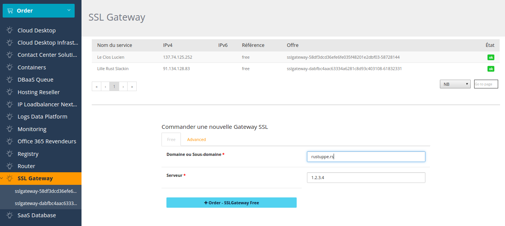

class: center, middle background-image: url(images/background-meetup-ovh.png) # Discover Rust in production @OVH ####4 april 2017 - Lille --- # Talks 1. Rust in production at OVH --- # Talks 1. Rust in production at OVH 2. Rust, Lending system, enter The borrow checker --- # Talks 1. Rust in production at OVH 2. Rust, Lending system, enter The borrow checker 3. Servo --- # Hi <img src="https://secure.meetupstatic.com/photos/member/e/9/9/5/highres_253379797.jpeg" alt="logo-ovh-meetup" height="150" /> ## Adrien Bensaïbi - DevOps @OVH - Working on IP Loadbalancing Next-Gen - Proud to be part of Lille Rust community - Passionate about server performance, scalable architecture, and programming langages - 2017 = Rust, Elixir/Erlang, Solidity - Twitter @olinkloo --- #OVH <img src="images/global-ovh.png" alt="global-ovh" height="400" /> --- #OVH Sunrise  --- # Rust - try 1 ## IP Loadbalancing NextGen ## SSL Gateway ## Metrics --- # Tiny tools .center[] --- # Tiny tools * simple binary * use-case focused * no huge environment (easy to configure) * simple logging * predictable * easy to restrict * easy to scale --- # What we do - 150 000 VM public cloud - 200 000 VM private cloud - 270 000 Servers 1. deal with huge volume of datas. 2. in a safe manner. 3. in realtime, because we have to act fast. --- # Challenge metric collector had a significante otherhead on system # We tried * scollector * tcollector * snap --- # Analyse * CSV parser * too much modules --- # Metric team comes with a solution Beamium + HAProxy exporter --- # Result * ~30% CPU on the system, now 0.6%, with filtering ! * 800k points/s sends to OVH Metrics * 1,8M points/s per beamium thread --- # Rust - try 2 ## CDN --- # Challenge lot's of purge request to invalidate files. we break limite of our purge module. <img class="purge" src="images/lostart.jpg" alt="logo" height="300" /> --- # Change design * ~12k purge per hour * complexe rules of purges, lead to invalidate 300 000 files * remove files faster with an <span>index</span> --- # Work * At first, i tend to develop index in C * But writing safe C, in a C system is error prone * Well i develop some parts in Rust --- # Results ## - * has to duplicate struct declaration * build system does not fit, some work to do ## + - FFI - fast development cycles - crates ! ## project * develop faster * could easily handle all this purges --- # Rewrite everything in Rust now ? --- # Rewrite everything in Rust now ? No, we do not * be modest * strong system are less exposed to bad events * translate is maybe a better approche [Corrode](https://github.com/jameysharp/corrode) * experiences --- # But If you start a new system Today: - integrate with existing systems, to make it safer. - reducing time to production and maintenance, in case you work in C. - for speed with high level langage --- background-image: url(images/starship-troopers.jpg) --- # Links projects use in ovh * [Beamium](https://github.com/runabove/beamium.git), a fast metric collector * [Flowgger](https://github.com/jedisct1/flowgger.git), a fast log collector * [ovh-rs](https://github.com/Olinkl/ovh-rs), self promotion * [edgeDNS](https://github.com/jedisct1/edgedns), a DNS cache --- # OVH sunrise * [SSLGateway](https://www.ovh.com/fr/ssl-gateway/) * [IP Loadbalancing NextGen](https://www.slideshare.net/ovhcom/getting-started-with-my-nextgen-ip-load-balancing) * [Metrics](https://www.ovh.com/fr/data-platforms/metrics/) * [CDN](https://www.ovh.com/fr/cdn/infrastructure/) --- # Community * [Forum](https://community.ovh.com/) * [Meetup](https://www.meetup.com/fr-FR/OVH-Meetup/) # Careers * [OVH careers](https://www.ovh.com/fr/careers/)